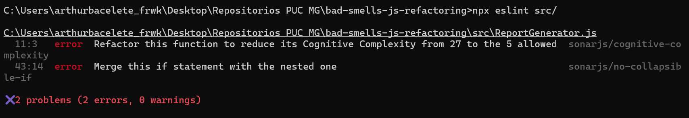
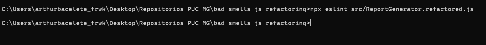
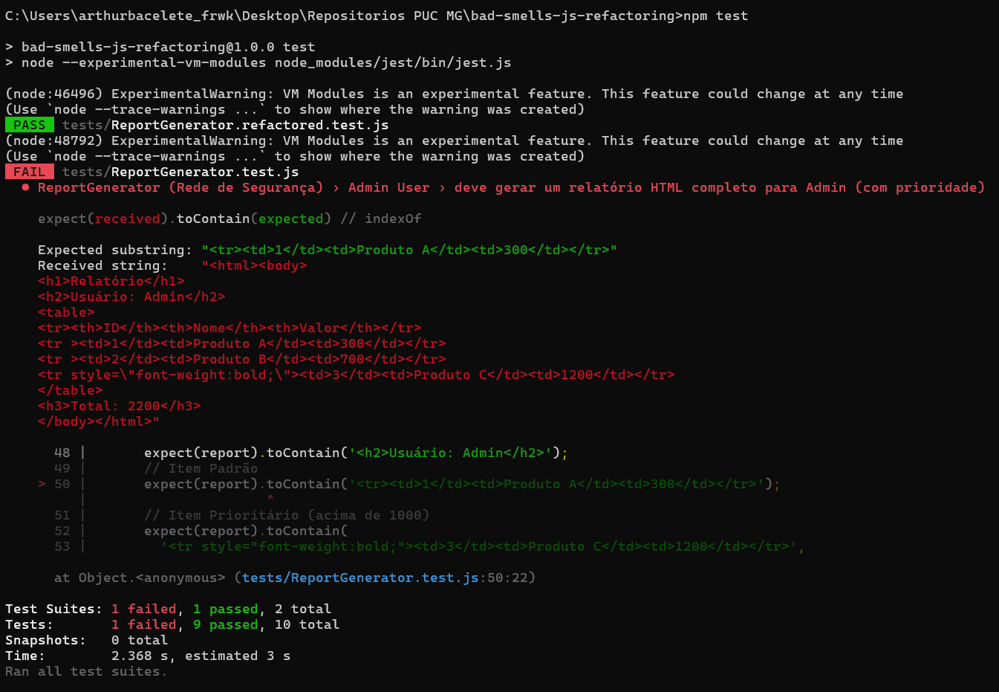

Disciplina: Teste de Software
Trabalho: Detecção de Bad Smells e Refatoração Segura
Aluno: Arthur Henrique Teixeira — Matrícula: 859123
Repositório: https://github.com/bacelete/bad-smells-js-refactoring
O código original (src/ReportGenerator.js) concentra toda a lógica em um único método, generateReport, com cerca de 55 linhas. Encontrei três smells principais.
generateReport monta o cabeçalho, filtra os itens por papel do usuário, decide quais itens são prioritários, formata cada linha em CSV ou HTML, soma o total e monta o rodapé. São pelo menos seis responsabilidades em um único método.
O mesmo teste if (reportType === 'CSV') … else if (reportType === 'HTML') aparece quatro vezes (cabeçalho, corpo do ADMIN, corpo do USER e rodapé), e dentro do laço há ifs aninhados em até quatro níveis (for → role → value → reportType).
MANAGER).${item.id},${item.name},${item.value},${user.name} é idêntica nos ramos ADMIN e USER.<tr>…<td>${item.id}</td><td>${item.name}</td><td>${item.value}</td></tr> aparece duas vezes, com uma pequena variação.total += item.value é repetido em quatro ramos.
Manutenção: uma correção feita em uma cópia precisa ser lembrada em todas as outras. Foi exatamente o que aconteceu aqui: a linha HTML do ADMIN usa `<tr ${style}>`, que gera <tr > (com espaço) quando o item não é prioritário, enquanto a do USER gera <tr>. As duas cópias divergiram.
1000 (limite de prioridade) e 500 (limite de visibilidade do USER) aparecem sem nome.item.priority = true altera os objetos recebidos pelo método. Por isso os testes precisam fazer JSON.parse(JSON.stringify(testItems)) para se proteger.this.db é armazenado e nunca utilizado.Configuração usada (.eslintrc.json): eslint:recommended + plugin:sonarjs/recommended, com sonarjs/cognitive-complexity limitado a 5, além de sonarjs/no-identical-functions e sonarjs/no-duplicated-branches como erro. O limite de 5 já vinha no repositório e é mais rigoroso que o valor 15 sugerido no enunciado.

Figura 1 — npx eslint src/ antes da refatoração: 2 erros, complexidade cognitiva 27.
Como a ferramenta ajudou: a análise manual identifica que o método "parece complicado", mas a regra sonarjs/cognitive-complexity quantifica isso. Ela soma +1 para cada if/else if/for/ternário e soma um peso adicional para cada nível de aninhamento. Assim, o if (reportType === 'CSV') no 4º nível de aninhamento custa bem mais que o do cabeçalho. Isso mostra que o problema principal não é a quantidade de ifs, e sim o aninhamento. Com esse número a refatoração ganha um critério objetivo (passar de 27 para ≤ 5) em vez de uma impressão subjetiva.
A ferramenta também apontou algo que eu não tinha anotado na análise manual: a regra sonarjs/no-collapsible-if (linha 43) indica que o else if (user.role === 'USER') contém um único if (item.value <= 500) aninhado, que poderia ser fundido em uma condição só. É um aninhamento desnecessário, fácil de passar despercebido na leitura. Além disso, a ferramenta é repetível e roda em CI, enquanto a revisão manual depende de quem lê.
O smell mais crítico era a condicional complexa e repetida dentro de um método longo, porque é ele que gera a alta complexidade cognitiva e a duplicação.
for (const item of items) {
if (user.role === 'ADMIN') {
if (item.value > 1000) {
item.priority = true;
}
if (reportType === 'CSV') {
report += `${item.id},${item.name},${item.value},${user.name}\n`;
total += item.value;
} else if (reportType === 'HTML') {
const style = item.priority ? 'style="font-weight:bold;"' : '';
report += `<tr ${style}><td>${item.id}</td><td>${item.name}</td><td>${item.value}</td></tr>\n`;
total += item.value;
}
} else if (user.role === 'USER') {
if (item.value <= 500) {
if (reportType === 'CSV') {
report += `${item.id},${item.name},${item.value},${user.name}\n`;
total += item.value;
} else if (reportType === 'HTML') {
report += `<tr><td>${item.id}</td><td>${item.name}</td><td>${item.value}</td></tr>\n`;
total += item.value;
}
}
}
}
const ROLE_RULES = {
ADMIN: {
canSee: () => true,
isPriority: (item) => item.value > ADMIN_PRIORITY_THRESHOLD,
},
USER: {
canSee: (item) => item.value <= USER_MAX_VISIBLE_VALUE,
isPriority: () => false,
},
};
const FORMATTERS = { CSV: new CsvFormatter(), HTML: new HtmlFormatter() };
generateReport(reportType, user, items) {
const formatter = FORMATTERS[reportType];
if (!formatter) {
return '';
}
const rules = this.rulesFor(user);
const visibleItems = items.filter((item) => rules.canSee(item));
const body = visibleItems
.map((item) => formatter.row(item, user, rules.isPriority(item)))
.join('');
const report =
formatter.header(user) + body + formatter.footer(sumValues(visibleItems));
return report.trim();
}
if (reportType === …) viraram duas classes, CsvFormatter e HtmlFormatter, com a mesma interface (header, row, footer). O método escolhe o formatador uma única vez com FORMATTERS[reportType]. Para adicionar um formato novo basta criar uma classe, sem mexer em generateReport (princípio Aberto/Fechado).if (user.role === …) virou o mapa ROLE_RULES, em que cada papel declara canSee e isPriority. Um papel desconhecido usa NO_ACCESS_RULES, o mesmo comportamento do original (nenhum item listado).sumValues e rulesFor isolam o cálculo do total e a escolha da regra. O total é calculado uma vez sobre visibleItems, o que elimina as quatro cópias de total += item.value.ADMIN_PRIORITY_THRESHOLD = 1000 e USER_MAX_VISIBLE_VALUE = 500.isPriority(item) em vez de gravar item.priority = true no objeto do chamador.Com isso, generateReport passa de um único bloco com 4 níveis de aninhamento para um fluxo linear com um único if (guard clause), e cada função fica abaixo do limite de complexidade cognitiva 5.

Figura 2 — npx eslint src/ReportGenerator.refactored.js: nenhum problema reportado.

Figura 3 — npm test: a suíte do arquivo refatorado passa (PASS); a do original falha em 1 teste, pelo bug do <tr > explicado abaixo. Os avisos ExperimentalWarning vêm do flag --experimental-vm-modules e não são erros.
Resultado: npx eslint src/ReportGenerator.refactored.js termina com 0 problemas (antes eram 2 erros, com complexidade cognitiva 27). npm test executa as duas suítes: ReportGenerator.refactored.test.js passa 5/5.
Ajuste de ambiente: o projeto declara "type": "module", e por isso o Jest 29 não carregava os arquivos (SyntaxError: Cannot use import statement outside a module). O script test do package.json foi alterado para node --experimental-vm-modules node_modules/jest/bin/jest.js, que habilita o suporte a ES Modules. Os testes em si não foram alterados.
Observação sobre a rede de segurança: o teste "deve gerar um relatório HTML completo para Admin" espera <tr><td>1</td>…, mas o código original gera <tr ><td>1</td>… (com espaço) para itens não prioritários do ADMIN, justamente por causa da duplicação descrita em 1.3. Por isso, ao rodar a suíte, o arquivo original passa 4/5 testes, e o resultado total é 9 de 10. Optei por não corrigir o arquivo original, conforme a instrução do trabalho de não modificá-lo. A falha mostra na prática o custo do smell de duplicação: duas cópias da mesma formatação divergiram e uma delas ficou com um bug. Na versão refatorada existe uma única função row, que só insere o atributo style quando necessário, então a saída é uniforme e o teste passa.
A suíte de testes foi o que tornou a refatoração segura. Ela verifica o comportamento observável (a string gerada) e não a implementação, por isso foi possível reestruturar o código por completo (trocar ifs por objetos e laços por filter/map/reduce) e confirmar a cada passo que nada quebrou. Sem ela, cada mudança dependeria de inspeção manual e o risco de regressão desestimularia a refatoração. Na prática, é isso que faz o código "apodrecer".
A redução dos bad smells melhora a qualidade de forma concreta:
generateReport agora se lê como a descrição do problema (escolher formato, filtrar, formatar, somar).ROLE_RULES.USER.canSee e HtmlFormatter.row podem ser testadas isoladamente.<tr > deixam de acontecer, porque cada formato existe em um único lugar.Por fim, o ESLint com o SonarJS transforma "código ruim" em uma métrica objetiva e automatizável, que pode ser aplicada no CI para impedir que os smells voltem.